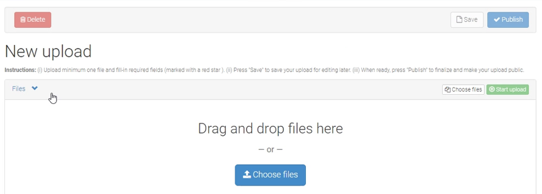
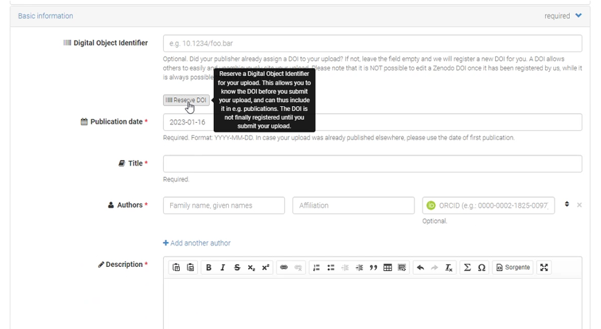
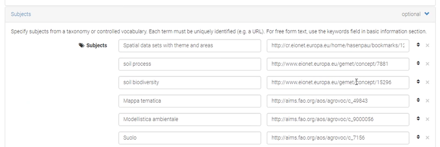

Zenodo data repository
This recipe proposes an approach to use Zenodo to publish a dataset (or other resources, such as research software, documents, video, etc). Some suggestions are made to increase the value of the Zenodo publication (by suggesting some conventions from the INSPIRE Technical Guidelines). Zenodo is a generic repository to publish resources related to scientific work and is part of the European OpenAIRE program and operated by CERN. As part of the upload process some metadata is provided and a persistent identifier (DOI) is created. Zenodo resources are clustered in communities. You can join an existing community or start one. Community moderators (dis)allow contributions to a community.
The procedure below is also relevant for other scientific repositories, such as Dataverse, Open Science Foundation, European Open Science Cloud or DataOne.
Upload your data to Zenodo
After (registering and) logging in you can select the upload resource option.

In the next step a metadata form opens starting with the obvious fields, title, abstract, keywords, publication date. Notice that an existing DOI can be provided or a new one be generated by the platform. DOI’s generated by the platform include a zenodo namespace.

Contact information
The list of contact roles is very detailed in Zenodo. The INSPIRE regulation suggests to have at least 1 contact which has the role of Contact point, including organisation name and and email address.
DataCite metadata schema
Zenodo, like many scientific repositories, adopts the DataCite metadata schema. A common mechanism to capture additional properties, which are not provided by the schema, is to select keywords from selected vocabularies. In Zenodo, the option to add keywords from vocabularies is available in the subject area at the bottom of the metadata form. Each subject is defined by a label and a URI. The table below suggests a number of subjects to be added, these subjects are derived from common conventions, such as the INSPIRE technical guidelines.
| Requirement | Thesaurus | Example |
|---|---|---|
| Topic category | TopicCategory | geoscientific Information |
| Conditions applying to access and use | ConditionsApplyingToAccessAndUse | no Conditions Apply |
| Geographic bounding box | GeoNames | Italy |
| INSPIRE Theme | Theme register | Soil |
| Priority dataset | Priority dataset | Directive 2008/56/EC |
| Degree of conformity | Degree of conformity | Not evaluated |
| IACS Data | IACS Data | lpis |
| Spatial Data Service Type | Spatial Data Service Type | View service |
| Spatial Scope | Spatial Scope | Regional |

DataCite and INSPIRE
The INSPIRE community currently does not provide a good practice to use the Datacite metadata schema. A technical component, such as pygeometa, is required to transform DataCite metadata to the supported formats. Or a second metadata document needs to be provided which matches the technical guidelines of INSPIRE.
Clement Lattelais has prepared a comparison tool on how the metadata schemes of various repositories (DataVerse, Zenodo, Cordis, ..) relate to the INSPIRE Metadata Guidelines. This tool is relevant to evaluate if (and how) a certain repository can be used for INSPIRE. But also to assess any non listed repositories.
INSPIRE Atom downloadservice
INSPIRE suggests to facilitate data downloads via a download service. One of the options to provide such a service is to provide a number of Atom.xml files, 1 file to describe the service and 1 to for each of the datasets in that service which provide download details, such as available formats and size. Read more about this convention in the recipe on WebDav and Atom services.